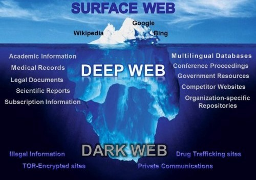
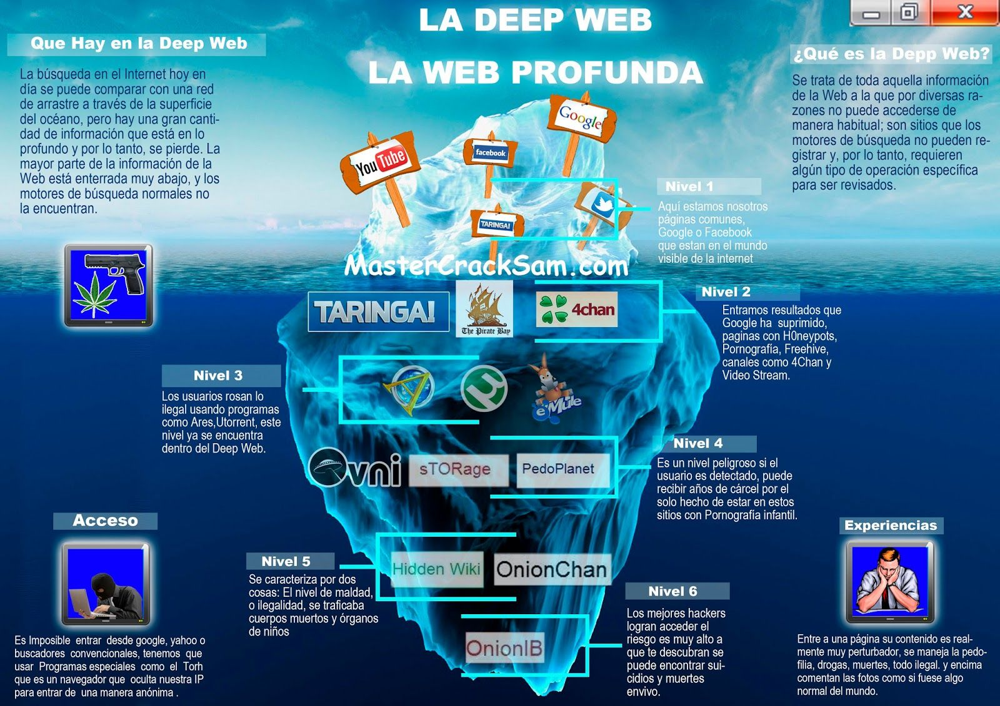

DEEP WEB
¿Qué es?
La Deep Web se encuentra debajo de la superficie y representa
aproximadamente el 90 % de todos los sitios web. Esta sería la
parte de un iceberg debajo del agua, mucho más grande que la web
superficial. De hecho, esta web oculta es tan grande que es
imposible determinar con exactitud cuántas páginas o sitios web
están activos en un momento dado. Siguiendo con la analogía, los
grandes motores de búsqueda podrían considerarse como barcos de
pesca que solo pueden “atrapar” sitios web cerca de la superficie.
Todo lo demás, desde revistas académicas hasta bases de datos
privadas y más contenido ilícito, está fuera de alcance. Esta web
profunda también incluye la parte que conocemos como la web oscura
o dark web.

¿Como entrar a la deep web?
Tor project es una iniciativa abierta cuyo objetivo final es
conseguir una navegación por internet completamente anónima, lejos
de las molestas cookies que rastrean nuestras actividades y de las
diversas herramientas que los motores de búsqueda despliegan para
saber donde, como, cuando y que hacemos en internet.
Niveles de la deep web
La 'Deep Web' tiene hasta el momento 5 niveles conocidos:
Nivel 1: En este nivel están las redes sociales de la
'Internet Profunda' así como también algunas de las páginas más
comunes.
Nivel 2: Este es el espacio en el que hay miles de
páginas de contrabando así como venta de materiales pirateados
como los foros con contenido explícito.
Nivel 3: Aquí hay información, archivos o torrents en
donde se pueden hacer descargas en cantidades masivas.
Nivel 4: A partir de aquí solo puedes entrar usando el
programa Tor y es que la 'Hidden Wiki', tan nombrada, nos
muestra libros prohibidos y material de descarga único.
Nivel 5: Ya llegamos a lo más profundo de la 'Deep Web'.
En este nivel aparecen los foros con 'lo peor de la humanidad' y
es que aquí están algunos como el Onion Chan, donde se
encuentran venta de objetos robados, contrabando, drogas, venta
de armas, hackers y asesinos a sueldo, pornografía infantil y
más.

¿Por qué es peligroso entrar en la Deep Web?
Hay varios motivos para no entrar a la Deep Web pero aquí te
dejaremos algunos para que los tomes en cuenta:
Algún hacker puede entrar a tu ordenador.
Te puedes encontrar con personas de mal vivir.
Puedes comprar algo ilícito.
Puedes acceder a archivos ultra secretos y posteriormente serás
buscado por la ley.
Podrías recibir amenazas.
Serías culpable de algún tipo de delito como cómplice.
Puedes perder la conexión definitiva de tu red.
Medidas de protección
Bloquea tu webcam para que no pueda ser accedida por un tercero
para espiarte.
Activa tu firewall.
Que tu sistema operativo este actualizado así como tu antivirus.
Nunca descargues nada aunque pueda parecer inofensivo.
Desactiva el JavaScript y las Cookies en tu navegador Tor.
Si es posible usa un VPN (Virtual Private Server) con un nombre
falso para que no puedas ser rastreado.